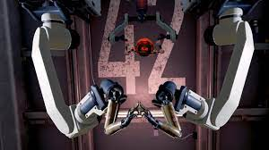

0000-000000
hello@edufair.com
123 abc street,edufair
hello@edufair.com
123 abc street,edufair

EduFair
Laboratory and demonstration have long been used to supplement lecture in chemistry education. Current research indicates that students are better served by laboratories which exercise the higher-order cognitive skills, such as inquiry-based laboratories. A significant difference was found between student conceptual understanding before and after the experiment, indicating that students performing the laboratory experiment and students viewing the demonstration-laboratory had an increase in conceptual understanding. However, no significant difference was found between the conceptual understanding of the two groups after the experiment, indicating that students learn roughly the same from both methods and that the demonstration-laboratory at least does no harm to the students conceptually. Long-term effects on student understanding were not measured. Student opinions comparing the demonstration laboratory to a hands-on laboratory were also collected and analyzed.  The laboratory aims to embrace and embody the spirit of allowing students and visitors to discover and re-discover science through hands-on activities and interactive learning; and to build understanding around visually and intellectually impactful science demonstrations. The Science Demonstration Laboratory highlights a variety of illuminating science experiments and demonstrations. More importantly, our team of dedicated guides is on hand to communicate the most exciting aspects of scientific concepts to the participants. The purpose of lab demonstration is to help the students learn how to write programs. Lab demonstration involves teaching and explanation. If a student is having problems with their program you should try to discover where their understanding is in error and provide an explanation that will allow the student to achieve a correct understanding. The range of problems experienced by students is large and varied and this is one of the reasons that lab demonstration is interesting. The lab exercises require the students to apply what they have learned in the programming lectures and so involve active learning. The labs should problem solving, program design as well as learning the syntax of the programming languages taught in the lecture course. The OLabs is based on the idea that lab experiments can be taught using the Internet, more efficiently and less expensively. The labs can also be made available to students with no access to physical labs or where equipment is not available owing to being scarce or costly. This helps them compete with students in better equipped schools and bridges the digital divide and geographical distances. The experiments can be accessed anytime and anywhere, overcoming the constraints on time felt when having access to the physical lab for only a short period of time. The features include : Content aligned to NCERT/CBSE and State Board Syllabus. Physics, Chemistry, Biology Labs from Class 9 to Class 12. English and Maths lessons for Class 9 and 10. Interactive simulations, animations and lab videos. The concepts and understanding of the experiment. The ability to perform, record and learn experiments - anywhere, anytime, and individualised practice in all areas of experimentation. The 'learning-enabled assessment' through OLabs facilitates in the assessment of; the procedural and manipulative skills of the experiment, the concepts and understanding of the experiment and a student's reporting and interpreting skills. Visualisation and development of the graphical symbols are done based on realistic situations and compared with the respective real equipment. Simulations are made interactive using various authoring tools, thus recreating and simulating a real lab environment.